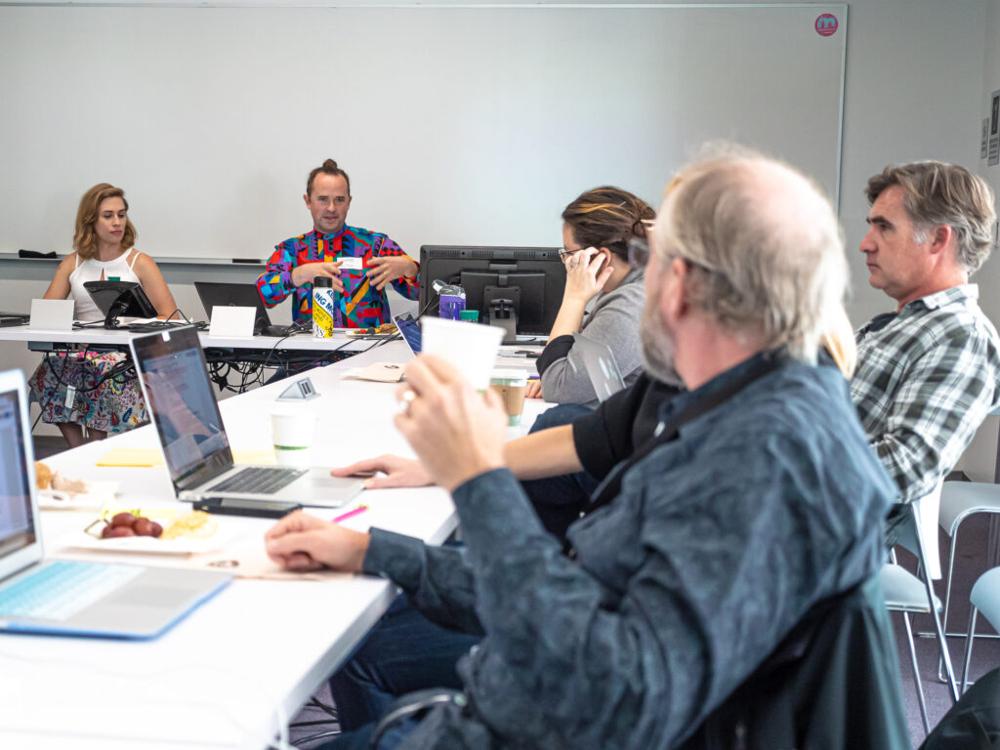

UCSF Archives and Special Collections is delighted to announce the publication of the Leona Mayer Bayer Correspondence digital collection on Calisphere. The digitization project is part of the NHPRC grant, Pioneering Child Studies: Digitizing and Providing Access to Collection of Women Physicians who Spearheaded Behavioral and Developmental Pediatrics. We worked in partnership with UC Merced Library’s Digital Assets Unit towards our goal of digitizing and publishing 68,000 pages from the collections of Drs. Hulda Evelyn Thelander, Helen Fahl Gofman, Selma Fraiberg, Leona Mayer Bayer, and Ms. Carol Hardgrove. To date we have digitized over 59,000 pages. Most digitized material is still undergoing quality assurance (QA) procedures. Here are some items we have digitized from Dr. Leona Mayer Bayer collection.
Dr. Leona Mayer Bayer received her MD from Stanford University Medical School in 1928. She worked with the Institute of Human Development in Berkeley and focused on child development, human growth, and psychology of sick children. The collection consists of around 400 digitized pages and the collection features professional correspondence of Dr. Leona Mayer Bayer. Some items that may be of interest is her correspondence with Dr. Hilde Bruch and her acceptance remarks for the PSR Broadstreet Pump Award she received in March of 1987.
We are excited to introduce Allison Tracy-Taylor who joins UCSF Archives and Special Collections as an Oral History Archivist. Allison will be leading the Oral History Program (OHP) supported by the Academic Senate Chancellor’s Fund and Committee on Library and Scholarly Communication that will enable the university to record and preserve diverse voices of the UCSF faculty sharing their stories in their own words and better shape the legacy they leave behind.
This program aims to better understand and share the history of the health sciences education through recording, transcribing, and preserving oral histories with members of the UCSF teaching and research community and by making these oral histories available to the public. Through engagement with DEI leaders, the project will record their experiences and document efforts to address and remediate inequities in health, health care, and education. The Oral History Program will elevate the narratives, perspectives, and expertise of historically underrepresented populations in the education and research communities at UCSF. This one-of-a-kind public record will address “silences” and gaps in the existing historical narrative. Allison will collaborate with faculty to convene Oral History Advisory Committees at each of the schools to identify and develop the list of interviewees and perform outreach activities related to the program.
Allison Tracy-Taylor
Collecting and preserving archival material that documents nuanced historical narratives and encourages contemporary conversations has been a major theme of Allison’s work. Most recently as an independent oral historian based in Sacramento, CA, Allison was the project lead for the California State Library website Voices of the Golden State, a curated collection of oral histories exploring many facets of California’s history. She also worked on multiple oral history projects, including a project on the history of the medical device technology industry in Silicon Valley for Stanford BioDesign, and the Documenting the Experiences of Mexican, Filipina, and Chicana Women in California Agriculture Oral History Project for the Center for Oral and Public History at Cal State Fullerton.
Allison is passionate about supporting oral history practitioners and growing the field into an inclusive, equitable space. She served as the 2019-2020 President of the Oral History Association (OHA), as well as on the OHA’s Council for several years. While president she initiated the development of the OHA’s Guidelines for Social Justice Oral History Work, convened and served on the Independent Practitioners’ Task Force, which developed a robust toolkit for independent oral historians, and chaired a task force that developed remote interviewing guidelines during the COVID-19 pandemic.
Community engagement and education have also been central to Allison’s work. Prior to going independent, Allison worked as the Oral History Administrator at the Kentucky Historical Society, overseeing the Kentucky Oral History Commission (KOHC), the only commission of its kind in the United States. She provided outreach, education, and technical support to oral history practitioners and programs throughout Kentucky. Allison was also the Oral Historian for the Stanford Historical Society, documenting Stanford University’s history through the stories of faculty and staff and serving as the program’s senior oral history mentor.
Allison began her work in oral history at the University of Nevada Oral History Program (UNOHP), serving in multiple roles, including as an interviewer for a multi-year project on the history of women’s athletics at the University of Nevada, and an editor for the resulting book We Were All Athletes: Title IX and Women’s Athletics at the University of Nevada. In addition to an M.A. in Oral History from Columbia University, Allison holds a B.A. in Sociology and English Literature from the University of Nevada.
In her free time, Allison enjoys hiking, reading, the distinct hobbies of collecting craft supplies and crafting, and baking. Though she will always be a Nevadan at heart, she has come to love the profound beauty of California.
We are excited to launch digital health humanities pilot programming starting January 2023! Digital health humanities (DHH) is an emerging discipline that utilizes digital methods and resources to explore research questions investigating the human experience around health and illness. The Digital Health Humanities Pilot (DHHP) will facilitate new insights into historical health data. Participants will learn how to evaluate and integrate digital methods and “archives as data” into their research through a range of offerings and trainings.
Participants at the first workshop for the No More Silence project, a precursor to digital health humanities pilot programming
The programming from this pilot will bring a humanistic context to understanding institutional, personal and community responses to health issues, as well as social, cultural, political and economic impacts on individual and public health. The DHHP will offer researchers from all disciplines (including faculty, staff, and other learners) tailored workshops, classes, and skill-building sessions. Workshops will encourage the use of “archives as data” and utilize datasets from holdings within the UCSF Archives and Special Collections (including the AIDS History Project and Industry Documents Library, among others). Additionally, in spring 2023 we will be hosting the Digital Health Humanities Symposium. The symposium will provide space to consider theoretical issues central to this emerging field and highlight digital health humanities projects. More information on the symposium will be shared soon.
The UCSF Digital Health Humanities Pilot is funded by the Academic Senate Chancellor’s Fund via the Committee on Library and Scholarly Communication.
Register for an upcoming Digital Health Humanities overview session
This session will include an orientation led by Digital Health Humanities Program Coordinator, Kathryn Stine and Digital Archivist, Charlie Macquarie. We will discuss various approaches in DHH research, including getting familiar with data analysis and programming skills, and will share an overview of the UCSF Library’s archival collections data available for research.
For questions about digital health humanities at UCSF, please contact Digital Health Humanities Program Coordinator, Kathryn Stine at kathryn.stine@ucsf.edu.
The Data Science Initiative (DSI) is offering workshops in the coming months to support researchers interested in implementing DHH approaches. Follow-up sessions will be available for researchers to reinforce and contextualize programming foundations in practical application. Check out the upcoming sessions:
We invite you to check out the library’s events and classes calendar for upcoming DHHP (and related DSI) programming. If you are unable to attend any of the sessions listed above, we advise referring to the DSI Collaborative Learning Environment (CLE) (accessible with MyAccess credentials) for recordings and resources.